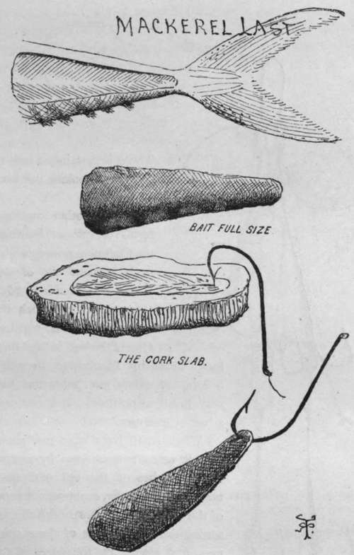
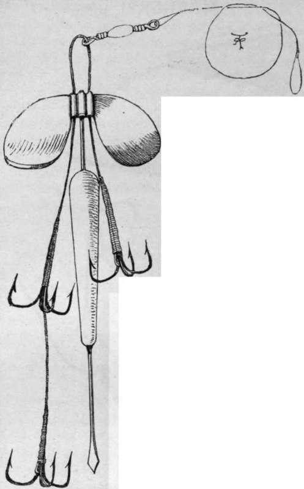

The Mackerel
Description
This section is from the book "Sea Fishing", by John Bickerdyke. Also available from Amazon: Sea Fishing.
The Mackerel
The Mackerel, which is more particularly described in a subsequent chapter, is very valuable for purposes of bait, and can be used in a variety of ways. In the first place, a strip of mackerel skin is the best of all baits for mackerel. Any thin, triangular piece of skin will answer the purpose, but the regulation last or laske, which is best of all, is cut in the following manner. With a sharp knife make a semicircular incision 1 1/2 or 2 inches below the root of the tail, and a slice downwards towards the tail, cutting out the piece shown by the dotted line in the illustration. Half this piece will be silver, the other half of the darker colour found on the back of the mackerel. It is the toughest and best piece of skin for the purpose that can be found in the mackerel. But it must be cut thin—that is essential. Next, lay it scales downwards on a piece of cork and push the point of the hook through the narrow end as illustrated. This little strip of skin will quiver and play in the water and look exactly like a small herring or sprat. No attempt should be made to cover the shank of the hook.
When shoals of very large mackerel are about, the laske may be 2 1/2 inches or even more in length. But generally speaking 1 1/2 inch is a good length. In clear water and calm weather both bait and hook should be smaller than on dark rough days.
No. 16 (2/0 Redditch scale) is a good general size for a mackerel hook, but No. 13 (2 Redditch) will be best when the fish are biting shyly. Professional fishermen use still larger hooks, simply because they are easily and quickly removed from the mackerel's mouth. But in light breezes these large hooks fail, without much doubt scaring the fish.
Young mackerel about five or six inches long, called in some places 'joeys,' make excellent baits for bass and pollack. I have tried them with much success on the Chapman spinner, an excellent form of which is illustrated on p. 108. It should be noted that the pull of the line comes direct on to the hooks, so that there is no tendency to drag the fans out of the mouth of the bait as there is in other mountings in which the swivel and gimp bearing the hooks are attached to the fans. In the Archer spinner, the spikes on the movable fans help to keep the joey in position. Perhaps triangles are a mistake. Sea fish as a rule take so ravenously that a single hook, or two, usually suffices.
MACKEREL last. (How cut and placed on hook).
Improved Chapman Spinner.
There is certainly a loss of time in unhooking fish from triangles.
Several other improved forms of spinner built on the Chapman principle have been brought out of late years. The latest is Hardy's 'Crocodile,' in which the central spike is omitted. One of the best is the ' Bedford,' made by Bambridge, in which a kind of safety pin holds the bait very firmly in position. It is certainly a bait economiser.
When small baits have run short, I have made a quasi-joey by cutting off six inches of the tail end of a mackerel diagonally, scooping out some of the flesh with a sharp penknife, inserting the spike of one of these spinners, and sewing up the edges of the skins together ; or, if a needle and silk have not been handy, binding round the upper part of the bait with white silk or thread. This operation should be neatly performed, and takes some time in the doing ; so it is well to be prepared with half a dozen baits before fishing begins. I have sometimes made a very successful spinning bait by cutting a long strip of mackerel-skin a quarter of an inch or a little more in thickness, binding one end of it on to the head of the Chapman spinner, and winding the rest of it round the spike, fixing it firmly at the lower end with thread or silk. This bait spins brilliantly, but is not to be made by those who have not the complete use of their fingers.
On or near the bottom, pieces of mackerel are excellent baits. The mackerel should be split down the back, in the manner described for herring, but the diagonal slices cut from each side are as a rule too large for any except fish of considerable size. There are very few fish which will not take mackerel bait; congers, in particular, are very fond of it.
Mudworm is the same thing as ragworm, which has a paragraph to itself later on.
Continue to:
- prev: Lugworms
- Table of Contents
- next: Mussels
Tags
fishing, hooks, bait, fishermen, spanish mackerel, mackerel fishing